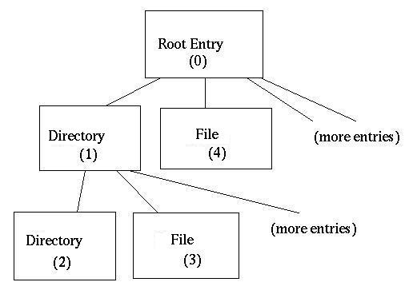

and new (OOXML - Office Open XML) formats.")

POIFS File System Internals
POIFS File System Internals
Introduction
POIFS file systems are essentially normal files stored on a Java-compatible platform's native file system. They are typically identified by names ending in a four character extension noting what type of data they contain. For example, a file ending in ".xls" would likely contain spreadsheet data, and a file ending in ".doc" would probably contain a word processing document. POIFS file systems are called "file system", because they contain multiple embedded files in a manner similar to traditional file systems. Along functional lines, it would be more accurate to call these POIFS archives. For the remainder of this document it is referred to as a file system in order to avoid confusion with the "files" it contains.
POIFS file systems are compatible with those document formats used by a well-known software company's popular office productivity suite and programs outputting compatible data. Because the POIFS file system does not provide compression, encryption or any other worthwhile feature, its not a good choice unless you require interoperability with these programs.
The POIFS file system does not encode the documents themselves. For example, if you had a word processor file with the extension ".doc", you would actually have a POIFS file system with a document file archived inside of that file system.
Note - this document is a good overview and explanation of the file format, but for the very nitty-gritty details, you should refer to [MS-CFB].pdf in the (now public) Microsoft Documentation.
Document Conventions
This document utilizes the numeric types as described by the Java Language Specification, which can be found at https://java.sun.com. In short:
- A byte is an 8 bit signed integer ranging from -128 to 127.
- A short is a 16 bit signed integer ranging from -32768 to 32767
- An int is a 32 bit signed integer ranging from -2147483648 to 2147483647
- A long is a 64 bit signed integer ranging from -9.22E18 to 9.22E18.
The Java Language Specification spells out a number of other types that are not referred to by this document.
Where this document makes references to "endian conversion" it is referring to the byte order of stored numbers. Numbers in "little-endian order" are stored with the least significant byte first. In order to properly read a short, for example, you'd read two bytes and then shift the second byte 8 bits to the left before performing an or operation to it against the first byte. The following code illustrates this method:
File System Walkthrough
This is a walkthrough of a POIFS file system and how it is put together. It is not intended to give a concise description but to give a "big picture" of the general structure and how it's interpreted.
A POIFS file system begins with a header. This header identifies locations in the file by function and provides a sanity check identifying a file as a POIFS file system.
The first 64 bits of the header compose a magic number identifier. This identifier tells the client software that this is indeed a POIFS file system and that it should be treated as such. This is a "sanity check" to make sure this is a POIFS file system and not some other format. The header also contains an array of block numbers. These block numbers refer to blocks in the file. When these blocks are read together they form the Block Allocation Table. The header also contains a pointer to the first element in the property table, also known as the root element, and a pointer to the small Block Allocation Table (SBAT).
The block allocation table or BAT, along with the property table, specify which blocks in the file system belong to which files. After the header block, the file system is divided into identically sized blocks of data, numbered from 0 to however many blocks there are in the file system. For each file in the file system, its entry in the property table includes the index of the first block in the array of blocks. Each block's index into the array of blocks is also its index into the BAT, and the integer value stored at that index in the BAT gives the index of the next block in the array (and thus the index of the next BAT value). A special value is stored in the BAT to indicate "end of file".
The property table is essentially the directory storage for the file system. It consists of the name of the file or directory, its start block in both the file system and BAT, and its actual size. The first property in the property table is the root element. It has two purposes: to be a directory entry (the root of the directory tree, to be specific), and to hold the start block for the small block data.
Small block data is a special file that contains the data for small files (less than 4K bytes). It subdivides its blocks into smaller blocks and there is a special small block allocation table that, like the main BAT for larger files, is used to map a small file to its small blocks.
Header Block
The POIFS file system begins with a header block. The first 64 bits of the header form a long file type id or magic number identifier of 0xE11AB1A1E011CFD0L. This is basically a sanity check. If this isn't the first thing in the header (and consequently the file system) then this is not a POIFS file system and should be read with some other library.
It's important to know the most important parts of the header. These are discussed in the rest of this section.
BATs
At offset 0x2C is an int specifying the number of elements in the BAT array. The array at 0x4C an array of ints. This array contains the indices of every block in the Block Allocation Table.
XBATs
Very large POIFS archives may have more blocks than can be addressed by the BAT blocks enumerated in the header block. How large? Well, the BAT array in the header can contain up to 109 BAT block indices; each BAT block references up to 128 blocks, and each block is 512 bytes, so we're talking about 109 * 128 * 512 = 6.8MB. That's a pretty respectable document! But, you could have much more data than that, and in today's world of cheap gigabyte drives, why not? So, the BAT may be extended in that event. The integer value at offset 0x44 of the header is the index of the first extended BAT (XBAT) block. At offset 0x48 of the header, there is an int value that specifies how many XBAT blocks there are. The XBAT blocks begin at the specified index into the array of blocks making up the POIFS file system, and are chained for the specified count of XBAT blocks.
Each XBAT block contains the indices of up to 127 BAT blocks, so the document size can be expanded by another ~8MB for each XBAT block. The BAT blocks indexed by an XBAT block are appended to the end of the list of BAT blocks enumerated in the header block. Thus the BAT blocks enumerated in the header block are BAT blocks 0 through 108, the BAT blocks enumerated in the first XBAT block are BAT blocks 109 through 235, the BAT blocks enumerated in the second XBAT block are BAT blocks 236 through 362, and so on.
While a normal BAT block holds 128 entries, each XBAT only references 127 BAT blocks. The last, 128th entry in an XBAT is the offset to the next XBAT block in the chain (or -1 if this is the last XBAT).
Through the use of XBAT blocks, the limit on the overall document size is that imposed by the 4-byte block indices; if the indices are unsigned ints, the maximum file size is 2 terabytes, 1 terabyte if the indices are treated as signed ints. Either way, I have yet to see a disk drive large enough to accommodate such a file on the shelves at the local office supply stores.
SBATs
If a file contained in a POIFS archive is smaller than 4096 bytes, it is stored in small blocks. Small blocks are 64 bytes in length and are contained within big blocks, up to 8 to a big block. As the main BAT is used to navigate the array of big blocks, so the small block allocation table is used to navigate the array of small blocks. The SBAT's start block index is found at offset 0x3C of the header block, and remaining blocks constituting the SBAT are found by walking the main BAT as if it were an ordinary file in the POIFS file system (this process is described below).
Property Table Start Index
An integer at address 0x30 specifies the start index of the property table. This integer is specified as a "block index". The Property Table is stored, as is almost everything in a POIFS file system, in big blocks and walked via the BAT. The Property Table is described below.
Property Table
The property table is essentially nothing more than the directory system. Properties are 128 byte records contained within the 512 byte blocks. The first property is always the Root Entry. The following applies to individual properties within a property table:
- At offset 0x00 in the property is the "name". This is stored as an uncompressed 16 bit unicode string. In short every other byte corresponds to an "ASCII" character. The size of this string is stored at offset 0x40 (string size) as a short.
- At offset 0x42 is the property type (byte). The type is 1 for directory, 2 for file or 5 for the Root Entry.
- At offset 0x43 is the node color
(byte). The color is either 1, (black), or 0,
(red). Properties are apparently meant to be arranged
in a red-black binary tree, subject to the following
rules:
- The root of the tree is always black
- Two consecutive nodes cannot both be red
- A property is less than another property if its name length is less than the other property's name length
- If two properties have the same name length, the sort order is determined by the sort order of the properties' names.
- At offset 0x44 is the index (int) of the previous property.
- At offset 0x48 is the index (int) of the next property.
- At offset 0x4C is the index (int) of the first directory entry. This is used by directory entries.
- At offset 0x74 is an integer giving the start block for the file described by this property. This index corresponds to an index in the array of indices that is the Block Allocation Table (or the Small Block Allocation Table) as well as the index of the first block in the file. This is used by files and the root entry.
- At offset 0x78 is an integer giving the total actual size of the file pointed at by this property. If the file size is less than 4096, the file is stored in small blocks and the SBAT is used to walk the small blocks making up the file. If the file size is 4096 or larger, the file is stored in big blocks and the main BAT is used to walk the big blocks making up the file. The exception to this rule is the Root Entry, which, regardless of its size, is always stored in big blocks and the main BAT is used to walk the big blocks making up this special file.
Root Entry
The Root Entry in the Property Table contains the information necessary to read and write small files, which are files less than 4096 bytes long. The start block field of the Root Entry is the start index of the Small Block Array, which is read like any other file in the POIFS file system. Since the SBAT cannot be used without the Small Block Array, the Root Entry MUST be read or written using the Block Allocation Table. The blocks making up the Small Block Array are divided into 64-byte small blocks, up to the size indicated in the Root Entry (which should always be a multiple of 64).
Walking the Nodes of the Property Table
The individual properties form a directory tree, with the Root Entry as the directory tree's root, as shown in the accompanying drawing. Note the numbers in parentheses in each node; they represent the node's index in the array of properties. The NEXT_PROP, PREVIOUS_PROP, and CHILD_PROP fields hold these indices, and are used to navigate the tree.

Each directory entry (i.e., a property whose type is directory or root entry) uses its CHILD_PROP field to point to one of its subordinate (child) properties. It doesn't seem to matter which of its children it points to. Thus in the previous drawing, the Root Entry's CHILD_PROP field may contain 1, 4, or the index of one of its other children. Similarly, the directory node (index 1) may have, in its CHILD_PROP field, 2, 3, or the index of one of its other children.
The children of a given directory property point to each other in a similar fashion by using their NEXT_PROP and PREVIOUS_PROP fields.
Unused NEXT_PROP, PREVIOUS_PROP, and CHILD_PROP fields contain the marker value of -1. All file properties have a value of -1 for their CHILD_PROP fields for example.
Block Allocation Table
The BAT blocks are pointed at by the bat array contained in the header and supplemented, if necessary, by the XBAT blocks. These blocks form a large table of integers. These integers are block numbers. The Block Allocation Table holds chains of integers. These chains are terminated with -2. The elements in these chains refer to blocks in the files. The starting block of a file is NOT specified in the BAT. It is specified by the property for a given file. The elements in this BAT are both the block number (within the file minus the header) and the number of the next BAT element in the chain. This can be thought of as a linked list of blocks. The BAT array contains the links from one block to the next, including the end of chain marker.
Here's an example: Let's assume that the BAT begins as follows:
BAT[ 0 ] = 2
BAT[ 1 ] = 5
BAT[ 2 ] = 3
BAT[ 3 ] = 4
BAT[ 4 ] = 6
BAT[ 5 ] = -2
BAT[ 6 ] = 7
BAT[ 7 ] = -2
...
Now, if we have a file whose Property Table entry says it begins with index 0, we walk the BAT array and see that the file consists of blocks 0 (because the start block is 0), 2 (because BAT[ 0 ] is 2), 3 (BAT[ 2 ] is 3), 4 (BAT[ 3 ] is 4), 6 (BAT[ 4 ] is 6), and 7 (BAT[ 6 ] is 7). It ends at block 7 because BAT[ 7 ] is -2, which is the end of chain marker.
Similarly, a file beginning at index 1 consists of blocks 1 and 5.
Other special numbers in a BAT array are:
- -1, which indicates an unused block
- -3, which indicates a "special" block, such as a block used to make up the Small Block Array, the Property Table, the main BAT, or the SBAT
File System Structures
The following outlines the basic file system structures.
Header (block 1) -- 512 (0x200) bytes
| Field | Description | Offset | Length | Default value or const |
| FILETYPE | Magic number identifying this as a POIFS file system. | 0x0000 | Long | 0xE11AB1A1E011CFD0 |
| UK1 | Unknown constant | 0x0008 | Integer | 0 |
| UK2 | Unknown Constant | 0x000C | Integer | 0 |
| UK3 | Unknown Constant | 0x0014 | Integer | 0 |
| UK4 | Unknown Constant (revision?) | 0x0018 | Short | 0x003B |
| UK5 | Unknown Constant (version?) | 0x001A | Short | 0x0003 |
| UK6 | Unknown Constant | 0x001C | Short | -2 |
| LOG_2_BIG_BLOCK_SIZE | Log, base 2, of the big block size | 0x001E | Short | 9 (2 ^ 9 = 512 bytes) |
| LOG_2_SMALL_BLOCK_SIZE | Log, base 2, of the small block size | 0x0020 | Integer | 6 (2 ^ 6 = 64 bytes) |
| UK7 | Unknown Constant | 0x0024 | Integer | 0 |
| UK8 | Unknown Constant | 0x0028 | Integer | 0 |
| BAT_COUNT | Number of elements in the BAT array | 0x002C | Integer | required |
| PROPERTIES_START | Block index of the first block of the property table | 0x0030 | Integer | required |
| UK9 | Unknown Constant | 0x0034 | Integer | 0 |
| UK10 | Unknown Constant | 0x0038 | Integer | 0x00001000 |
| SBAT_START | Block index of first big block containing the small block allocation table (SBAT) | 0x003C | Integer | -2 |
| SBAT_Block_Count | Number of big blocks holding the SBAT | 0x0040 | Integer | 1 |
| XBAT_START | Block index of the first block in the Extended Block Allocation Table (XBAT) | 0x0044 | Integer | -2 |
| XBAT_COUNT | Number of elements in the Extended Block Allocation Table (to be added to the BAT) | 0x0048 | Integer | 0 |
| BAT_ARRAY | Array of block indices constituting the Block Allocation Table (BAT) | 0x004C, 0x0050, 0x0054 ... 0x01FC | Integer[] | -1 for unused elements, at least first element must be filled. |
| N/A | Header block data not otherwise described in this table | N/A | N/A | -1 |
Block Allocation Table Block -- 512 (0x200) bytes
| Field | Description | Offset | Length | Default value or const |
| BAT_ELEMENT | Any given element in the BAT block | 0x0000, 0x0004, 0x0008, ... 0x01FC | Integer |
-1 = unused -2 = end of chain -3 = special (e.g., BAT block) All other values point to the next element in the chain and the next index of a block composing the file. |
Property Block -- 512 (0x200) byte block
| Field | Description | Offset | Length | Default value or const |
| Properties[] | This block contains the properties. | 0x0000, 0x0080, 0x0100, 0x0180 | 128 bytes | All unused space is set to -1. |
Property -- 128 (0x80) byte block
| Field | Description | Offset | Length | Default value or const |
| NAME | A unicode null-terminated uncompressed 16bit string (lose the high bytes) containing the name of the property. | 0x00, 0x02, 0x04, ... 0x3E | Short[] | 0x0000 for unused elements, field required, 32 (0x40) element max |
| NAME_SIZE | Number of characters in the NAME field | 0x40 | Short | Required |
| PROPERTY_TYPE | Property type (directory, file, or root) | 0x42 | Byte | 1 (directory), 2 (file), or 5 (root entry) |
| NODE_COLOR | Node color | 0x43 | Byte | 0 (red) or 1 (black) |
| PREVIOUS_PROP | Previous property index | 0x44 | Integer | -1 |
| NEXT_PROP | Next property index | 0x48 | Integer | -1 |
| CHILD_PROP | First child property index | 0x4c | Integer | -1 |
| SECONDS_1 | Seconds component of the created timestamp? | 0x64 | Integer | 0 |
| DAYS_1 | Days component of the created timestamp? | 0x68 | Integer | 0 |
| SECONDS_2 | Seconds component of the modified timestamp? | 0x6C | Integer | 0 |
| DAYS_2 | Days component of the modified timestamp? | 0x70 | Integer | 0 |
| START_BLOCK | Starting block of the file, used as the first block in the file and the pointer to the next block from the BAT | 0x74 | Integer | Required |
| SIZE | Actual size of the file this property points to. (used to truncate the blocks to the real size). | 0x78 | Integer | 0 |
by Marc Johnson